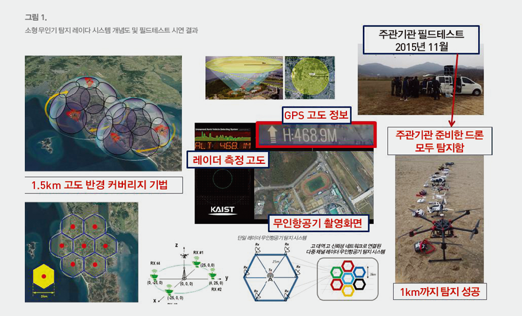

연구성과 10선
연구성과 10선
KAIST RESEARCH ACHIEVEMENTS
소형 무인기 탐지용
마이크로 체인 레이다 시스템
전기및전자공학부ㆍ전산학부 박성욱ㆍ전주환ㆍ김순태ㆍ한동수
요약
소형 무인기 및 드론은 기존 레이다 시스템들로는 탐지하기가 쉽지 않다. 본 연구에서는 이러한 소형 무인기를 정확히 탐지할 수 있는 마이크로 체인 레이다 시스템 개념을 개발하고 시연하였다. 실험 결과 1km까지 소형 무인기를 탐지하고 위치, 고도, 속도 등 필요한 정보를 추출하는데 성공하였다. 제안한 레이다를 고출력 송신기와 빔 가변을 통하여 더 높은 분해능과 더 넓은 탐지 범위를 갖는 레이다로 발전시킨다면, 세계적으로 더 큰 경쟁력을 확보할 수 있을 것 으로 기대된다.
연구내용
통상적인 기존 레이다로는 잡히지 않는 아주 소형의 비행체 무인기술을 북한이 도입해서 우리 안보에 위협을 주는 새로운 형태의 도발을 시도하였다. 한국 육군은 현재 저고도 탐지레이다(TPS-830K)를 운용하고 있지만 소형 무인항공기는 제대로 포착하지 못하는 실정이다. 한국 공군도 전방 지역에서 저고도 감시용 레이다를 운용하고 있지만 산세가 험준하고 접경 지역이 넓어 전체를 감시하는 데는 한계가 있다. 이로 인해, 이스라엘, 영국 등 해외에서 레이다를 수입하여 실제 무인기를 날려 탐지를 위한 모의시험을 하였지만 모두 탐지 확률이 낮다. 따라서 이러한 소형 무인기를 정확히 탐지할 수 있는 수준의 정밀도와 민감도를 갖는 새로운 레이다 시스템이 요구되고 있다.
본 연구에서는 우리 군이 보유한 레이다 RCS의 최소 수치(2.0㎡)보다 60배 이상 탐지성능이 개선된 0.03㎡ 이하의 RCS를 갖는 소형 무인기를 탐지할 수 있는 4채널 마이크로 체인 레이다 무인기 탐지 레이다 시스템을 자체 기술로 개발하였다. 본 연구진은 무인기의 프로펠러 속도(Tip velocity)가 새 및 기타 클러터(Clutter)로부터 구별되는 무인기만의 특징임을 발견하였으며 이를 바탕으로 소형 무인기 탐지를 위해 Ku-band에 맞추어 안테나, RF소자로 이루어진 레이다 하드웨어와 동기화 기술, 무인항공기 추적 알고리즘 개발,실시간 데이터 처리 시스템으로 탐지 레이다를 구성하였다. 본 연구진은 소형 무인기의 정확한 위치좌표를 탐지하기 위해 레이다 시스템을 1개의 송신부와 4개의 수신부로 구성하여 Bistatic Radar 방법을 적용하였다. 마이크로 체인레이다의 한셀은 연직 방향 원추 모양의 빔을 형성하여 항공 탐지 범위를 형성하는 구조이다.
본 연구에서 개발한 마이크로 체인 레이다 시스템은 Dynamic range, 안정성, 전반적인 시스템의 성능을 개선함과 동시에 아날로그에 비해 시스템의 크기를 줄이고 배치에 용이하다. 4개의 독립 수신부로부터 받은 신호들은 체인 레이다 시스템의 탐지율을 개선시켜 여러 개의 망 형태로 시스템을 구성할 때 큰 이점이 있다. 제작된 레이다시스템은 150MHz의 대역폭을 가지며 이는 안테나의 반경 방향으로 1m의 해상도를 갖는다. 반경 속도가 최대 10.635m/s까지 측정될 수 있고, 0.053m/s의 속도 해상도를 갖는다. 본 연구진은 소형 무인기 탐지 레이다 시스템을 이동형으로 구축하여 탐지 성능 평가를 위해 현장 탐지 실험을 진행하였다. 주관기관입회하에 총 11종의 드론 모두 성공적으로 탐지가 됨을 확인하였고 탐지 성능을 입증하였다.
 그림 1. 소형 무인기 탐지 레이다 시스템 개념도 및 필드테스트 시연 결과
본 연구에서 개발한 소형 무인기 탐지용 마이크로 체인 레이다 시스템 기술은 우선적으로 국가 주요시설 및 군사 분계선 주위의 적의성 무인기 탐지를 위한 국가 안보의 핵심기술로써 활용될 수 있다. 또한 최근 드론의 응용 증가에 따른 충돌 및 탐지에 따른 수요가 늘어남에 따라 여러 민수용으로 적용 가능할 것으로 기대된다.
연구비지원
ㆍKAIST 기관고유사업, Micro Chained Radar Project
연구실적
ㆍ국내특허 10-2015-0078711, 주파수 변조 연속파 레이더시스템 망 및 이를 이용한 무인 항공기 감지 방법
ㆍ해외특허 14626076, Apparatus and method for measuring precipitation in the atmosphere using K-band frequency-modulated continuous wave(FMCW) weather radar sytem